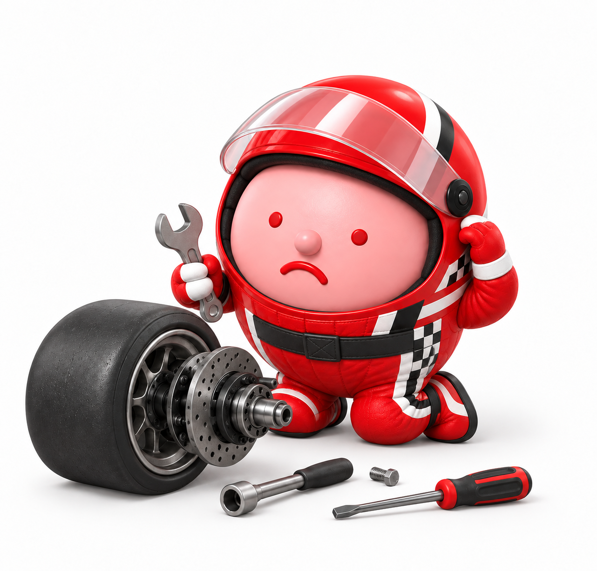
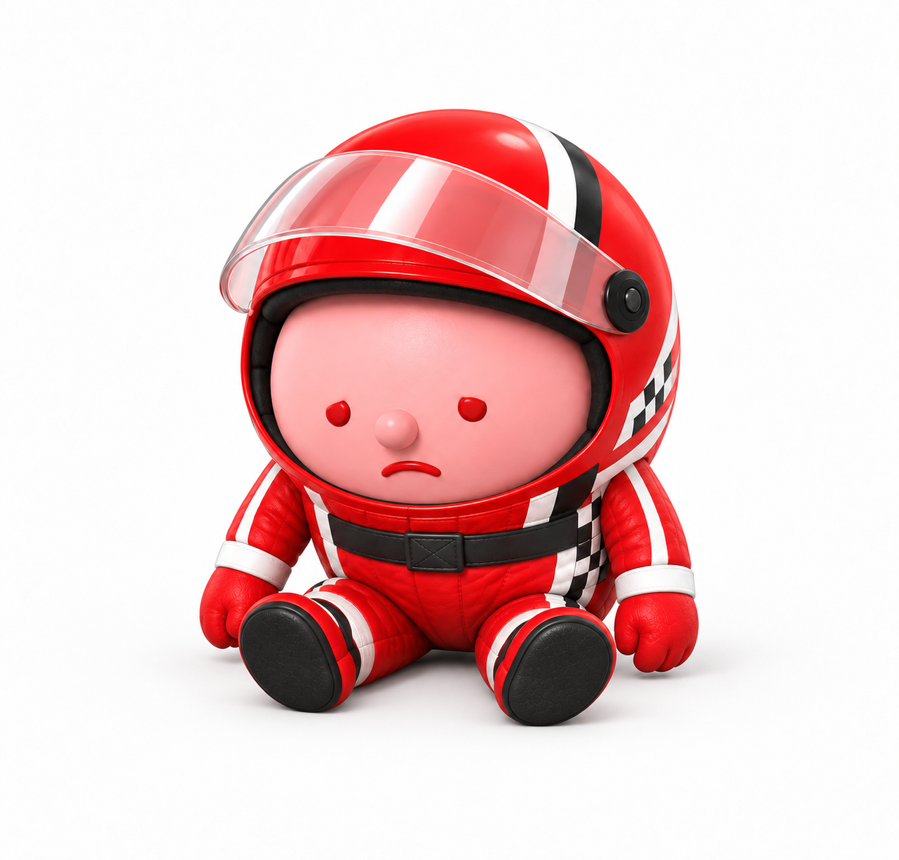

센터별 강사 로그인
사전 부여된 센터 고유 코드 및 강사명을 입력 후 로그인 하면,
센터별 화면으로 이동합니다.
교육생 입장 안내
QR을 스캔하거나 아래 주소로 접속하면
이 센터의 모바일 화면으로 바로 연결됩니다.
 QR코드 스캔
QR코드 스캔
아직 입장한 교육생이 없습니다.
우리 팀의 이름과 구호를 정해주세요
{{ tc.name }}
{{ tc.slogan }}
워크북 소개
워크북을 채우는 것보다 중요한 것은 고민과 탐색
워크북을 모두 채우지 않아도 괜찮습니다.
작성에 대한 부담은 내려놓고, 핵심 키워드 중심으로
간략히 메모해보세요.
이번 워크숍의 핵심은 나의 생각에 동료의 경험을 더해
생각의 지평을 넓히고, 서로의 인사이트를 나누며,
리더로서 한 단계 성장하는 것에 있습니다.
반장 리더십 RACE
역할 인식에서 실행까지, 성과를 높이고 조직을 움직이는 리더십 레이스
오늘 워크숍 컨셉 : 반장의 하루 RACE
아침 시간부터 퇴근 전 마무리까지,
반장의 하루 속에서 필요한 리더십을 학습합니다.
리더십
Engine On
성과를 좌우하는
아침시간
구성원 소통과
성과 관리
리더십
Next Lap
유쾌하고 의미 있는 시간을 위한 그라운드 룰
조원들의 이야기에
평가, 판단하기 보다
존중하고 경청하기
반장으로서의 고민을
편안하게 나눌 수 있도록
비밀 유지하기
적극적으로
소통하고 참여하며
서로에게 배우기
출근 전, 리더십 Engine On
반장의 역할 이해
조직 안에서
기대되는 역할을 인식해야 하고,
그 역할을 명확히 이해하지 못하면
발생하는 3가지 현상
역할 갈등
몰입 감소
성과 저하
이러한 심리 상태를 무엇이라고 부를까요?
리더가 되는 것이 두렵고, 팀원에게 일을 맡기기보다 내가 직접 처리하는 게 마음이 편해.
팀원 앞에서 완벽한 모습을 보여야 할 것 같은 부담감이 커.
피드백을 하는 것도, 이끄는 것도 어려워. 그래서 나는 ‘리더’라는 말이 불편해.
{{ phobiaText }}
화면을 클릭하면 닫힙니다구글의 리더십 실험: 과연 리더가 필요할까?
과연 리더가 필요할까?
팀에서 리더(관리자)를 없앰
구성원들이 자율적으로
의사결정, 일정 조율, 피드백을 수행할 것으로 기대
심각한 성과 저하로 1년도 안돼 실험 중단
방향성 상실
갈등 조율 불가
피드백 부족
리더는 없어도 되는 존재가 아니라,
잘 준비 되어야 하는 존재
구글의 창립자 래리 페이지와 세르게이 브린
챌린지 1. 마시멜로우 챌린지
MARSHMALLOW CHALLENGE
[조별 ACTIVITY] 마시멜로 챌린지 준비물


제한된 자원(스파게티 면, 테이프, 실, 마쉬멜로우)을 활용해
가장 높은 구조물을 만들어라!
1. 모든 구조물은 스파게티 면, 테이프, 실만으로 지탱되어야 하며, 마쉬멜로우는 구조물의 최상단에 위치해야 함.
2. 마쉬멜로우는 온전한 상태여야 한다. 어떤 부분도 자르거나 먹을 수 없음.
3. 외부 자원은 사용할 수 없으며(검색, 전화 안됨), 주어진 시간 안에(18분) 작업을 완료해야 함.
4. 천장이나 머리 위 구조물에 물건을 매달거나, 매달아서는 안됨.
5. 구조물이 무너지지 않고 1분간 자립할 수 있어야 함.
역할 정하기
의사결정자(1명) · 관리자(2명) · 작업자(2명) · 관찰자(1명)
의사결정자
의사결정과 구체적 지시
• 관리자에게 명확하고,
간단한 지시를 내릴 것
• 필요할 경우 구조물
안정성 점검을 위한 지시
• 관리자에게 작업자에게 제공해야 하는 재료에
대한 지시
관리자
작업 관리 및 자원 제공
• 의사결정자의 지시를
작업자에게 효과적으로 설명하고 전달
• 작업자에게 직접적인 조언 제공
• 작업자가 재료를 원활히 사용할 수 있도록 설명
작업자
구조물 직접 조립 완성
• 관리자의 지시에 따라
작업함
• 관리자의 직접적인
도움을 받을 수 없음
관찰자
관찰과 피드백
• 작업 과정 관찰 및 기록
• 활동 후 피드백
전체 프로세스
의사결정자와 관리자 간
전략 수립
관리자가 작업자에게 업무 지시
(작업자는
질문할 수 없음)
상호 소통하며 작업 진행
(관리자와
의사결정자는
소통 가능)
STEP 1 의사결정자와 관리자 간 전략 수립
{{ t1Time }}작업자는 아직 참여하지 않습니다.
STEP 2 작업 진행
{{ t2Time }}작업자는 안대를 쓰고 작업을 진행하며, 관리자에게 질문할 수 없습니다.
STEP 3 작업 진행
{{ t3Time }}이제 안대를 벗고 관리자에게 질문할 수 있습니다.
[조별토의] 마시멜로 챌린지 리뷰 · 현업에 적용할 점
서로 의견을 나누고, 내용을 정리해 주세요.
우리 조의 챌린지 과정과 결과에 대해
어느 정도 만족하시나요?
각자 자신의 역할을 수행하면서 답답했던 점은 무엇이었나요?
의사결정자 / 작업관리자 / 작업자
이 활동이 반장인 우리에게 주는 시사점은
무엇인가요?
마시멜로 챌린지를 다시 진행한다면,
어떤 부분에서 변화를 시도하겠습니까?
반장은 센터의 방향과 SM의 실행을 연결하는 역할
센터장
센터의 방향 제시
실장
운영 기준과 자원 조정
반장
현장 연결과 실행 촉진
SM
고객 접점에서 실행
• 센터의 방향과 기준 정확히 이해
• 현장 상황과 이슈를 사실대로 공유
• 결정된 방향을 일관되게 실행
• SM이 이해할 언어로 방향 설명
• 업무 수행에 필요한 기준과 지원 제공
• 실행 결과를 확인하고 피드백
[조별대화] 내가 만난 BEST 반장 vs WORST 반장
SM 시절,
함께 일하고 싶은 반장은
어떤 모습이었나요?
SM 시절,
함께 근무하는 것이 힘들었던 반장은
어떤 모습이었나요?
조원과 함께 경험을 공유해 주세요.
‘내가 잘하는 리더’ vs ‘함께 잘하게 만드는 리더’
• 내가 직접 해결
• 내 기준으로 판단
• 문제가 생기면 대신 처리
• 당장의 속도에 집중
• SM이 해결할 수 있도록 질문
• 기준과 완료 모습을 명확히 공유
• 필요한 지원 후 맡겨보기
• 팀의 지속적인 실행력에 집중
반장 역할 자가진단 |
지금의 나를 점검합니다
방향 연결
기준과 목적
일상 운영
조회·배분·점검
관계와 문화
관찰·인정·소통
성과와 성장
피드백·육성
우리 센터 반장들의 자가진단 결과
문항별 결과
진단 결과를 참고하여, 현재 나의 역할을 성찰합니다
Q. 이미 잘하고 있는 것은
무엇인가요?
Q. 그것을 위해 어떤 노력을
하고 있나요?
Q. 중요하지만 실행이 잘 되지
않는다고 생각하는 것은
무엇인가요?
Q. 그 이유는 무엇일까요?
Q. 앞으로 좀 더 노력해보고
싶은 부분은 어떤 영역인가요?
반장은 더 잘하는 사람이 아니라,
더 잘하게 만드는 사람.
반장의 리더십은 하루의 작은 장면에서 드러난다
반장 리더십 = 매일 반복되는 장면에서 SM의 실행을 돕는 행동
아침 시간
인사와 구성원 파악
방향·우선순위 정렬
일과 중
구성원 관리
+ 성과관리
퇴근 전
점검과 다음 행동
성과를 좌우하는 아침 시간
아침 인사와 반별 아침조회
[조별공유]
출근시간, 긍정적 하루를 열기 위한 나만의 노하우는?
조원들과 함께 공유해 주세요.
아침은 구성원의 상태를 가장 먼저 확인하는 시간
첫 접점
하루의 관계를 여는 순간
상태 확인
평소와 다른 신호를 발견
업무 준비
지원이 필요한 지점을 미리 파악
[영상] 우수 센터 반장 인터뷰 — 아침 시간 관련
인터뷰 클립 파일을 이 영역에 배치
조직문화는 큰 이벤트보다
반복되는 작은 행동으로 만들어집니다
반장의 반복 행동이 ‘이 반에서는 어떻게 일하는가’를 보여줍니다.
매일 먼저 건네는
아침 인사
구성원의 생각을
한 번 더 묻는 질문
문제를 말해줘서
고맙다는 반응
김 반장의 사례
김 반장은 오늘 아침, SM들보다 30분 먼저 센터에 도착해 하루 시작 준비를 하고 있다.
SM들이 하나 둘, 센터로 출근하며 아침 인사를 하는데,
SM 2년차인 박민우 님이 다른 때와 달리 얼굴 상태가 좋지 않다.
평소 같았으면 사람들과 같이 커피 마시면서 5분이라도 잡담을 나누며 하루를 시작할텐데
본인 자리에서 의자를 뒤로 눕히며 굳은 표정으로 한숨을 푹 쉰다.
10분 조회 시간에도 가장 늦게 들어와 계속 고개만 숙이고 있는 모습이 평소에 박민우 님과는 많이 다른 모습이다.
그냥 현장으로 보내기에는 마음이 쓰이는데 어떻게 말을 걸어야 할까 고민이다.
내가 김 반장이라면 박민우 님에게 어떻게 대화를 시작하겠습니까?
구성원의 ‘상태’를 알려주는 4가지 신호
관찰은 판단이 아니라, 확인 질문을 시작하기 위한 단서
표정
눈을 잘 맞추지 않는다
얼굴이 굳어 있다
말투
대답이 짧다
평소보다 날카롭다
행동
준비나 실행이 늦다
실수가 반복된다
관계
대화를 피한다
혼자 떨어져 있는다
같은 인사라도 관계를 여는 방식은 다르다
• “왔어요?”
• “오늘 바쁘니까 바로 준비해요.”
• 표정과 반응을 보지 않고 지나감
• “좋은 아침이에요.”
• “오늘 표정이 조금 피곤해 보이는데 괜찮아요?”
• 대답을 듣고 필요한 지원을 확인
짧은 아침 대화는 3단계면 충분
핵심 포인트는 ‘당신의 상태를 보고 있다’는 신호를 전하는 것.
인사
이름을 부르고 눈맞춤
관찰과 확인
평소와 다른 점을 질문
지원
오늘 필요한 도움 확인
아침에 바로 사용할 수 있는 한마디
“좋은 아침이에요. 오늘도 잘 부탁해요.”
“오늘은 평소보다 말이 적은 것 같은데, 괜찮아요?”
“오늘 업무 시작 전에 미리 공유할 어려움이 있나요?”
“오전 일정 중 제가 먼저 확인해 줄 부분이 있을까요?”
[영상] SM 인터뷰 — 반장님 덕분에 아침에 힘이 나요
인터뷰 클립 파일을 이 영역에 배치
성과와 실행을 맞추는 아침 20분
아침 인사로 상태를 확인하고, 조회로 오늘의 기준을 맞춥니다.
먼저 인사한다
눈을 맞추는 한마디가 그날의 관계를 엽니다.
상태를 확인한다
표정·말투·행동의 변화를 알아차리고 짧게 묻습니다.
방향을 맞춘다
성과·우선순위·업무 배분을 같은
그림으로 정리합니다.
센터 조회도 있는데 반별 미팅을 꼭 해야 하나요?
여유 있는 센터나 그렇지… 우리는 다들 출발하기도 벅차다구요!
반원들이 현장으로 출발하기 전,
그 날 하루의 컨디션을 챙기고 업무의 목표와 우선순위,
서로 도움을 주고 받을 부분을 확인하는 중요한 순간
나는 어떤 사람을 선호하는가?
따뜻하고 부드럽지만
유능함은 부족한 사람
따뜻함은 부족하지만
유능한 사람
다른 사람을 판단할 때 갖는 2가지 고정관념
상대방의 의도
= 따뜻함
의도를 실행할 능력
= 유능함
따뜻X유능 고정관념 모델
연민 / 동정
선망 / 존경의 대상
분노 대상
질투 / 시기 / 경쟁상대
출처: 프린스턴대 수잔 피스크(Susan Tufts Fiske) 교수의 고정관념 모델
아침 조회의 두 가지 역할
• 오늘의 상황과 목표 공유
• SM별 업무와 우선순위 배분
• 진행·지연·지원 필요 사항 확인
오늘 하루의 목표와 가장 중요하게 생각해야 할
업무 기준을 확인합니다.
• 전날 잘한 행동 인정
• 현장의 어려움과 컨디션 확인
• 출발 전 격려와 지원 메시지
가급적 긍정적 기분, 서로 지지적인 관계에서
일한다는 마음을 갖고 출발할 수 있게 돕습니다.
챌린지 2.
우리 반 아침 조회 장면 공유
OUR MORNING BRIEFING
우리 반 아침 조회,
이렇게 하고 있다
모바일 앱 > 지금 하고 있는 아침 조회 방식을 짧게 적어주세요.
주기 · 시간
얼마나 자주, 조회 시간은 몇 분인가
진행 내용과 방식
무엇을 말하고, 어떤 순서로 하나
효과 있던 한 가지
우리 반에서 실제로 통한 방법
지금 우리 센터의 아침 조회 장면 공유
{{ b.how }}
{{ b.best }}
5단계로 진행되는 아침 조회
짧게 말하되, 모두가 같은 그림을 보고 출발합니다.
성과·이슈
어제와 오늘 현황
우선순위
반드시 먼저 할 일
업무 배분
누가 무엇을 맡는가
인정·격려
잘한 행동과 기대
지원 확인
막힘과 요청 사항
짧고 분명한 10분 미팅 예시
“어제 수리지연 2건이 남았습니다. 원인과 오늘 일정을 먼저 확인하겠습니다.”
“오전에는 지연 2건과 예약 고객 대응을 가장 먼저 봅니다.”
“A님은 지연 1건, B님은 예약 건을 맡고 11시에 진행 상황을 공유해주세요.”
“어제 긴급 건을 빠르게 공유해준 덕분에 고객 안내가 늦지 않았습니다.”
“기술·일정·고객 안내 중 지금 지원이 필요한 부분이 있나요?”
우리 반의 10분 미팅 설계해보기
어제 결과와 오늘 확인할 변수
오늘 반드시 먼저 처리할 일
누가 무엇을 맡고, 완료 기준은 무엇인지
어제 잘한 행동과 오늘의 기대
예상되는 막힘과 필요한 지원
구성원의 동기와 실행을 높이는
명확한 업무지시
같은 지시가 다르게 이해되는 이유
전달했다고 해서, 같은 기준으로 이해한 것은 아니다
목적이 없음
왜 해야 하는지 모름
표현이 모호함
잘·빨리·적당히
기준이 다름
완료 모습이
사람마다 다름
확인이 없음
이해한 내용을
다시 맞추지 않음
빠른 업무 지시는 PREP으로
Point
핵심 지시 내용
Reason
일을 해야 하는
배경과 이유, 맥락
Example
발생할 결과,
접근 방법, 참고사항
Point
핵심 지시 내용을
다시 한번 강조
PREP 예시
오늘 배정된 출장 건 중 재방문 예정 건은
오후 3시까지 부품 확보 여부를 확인해서 저에게 회신해 주세요.
재방문 일정이 이번 주에 몰려 있어서,
부품이 없는 건은 오늘 안에 발주해야 고객 약속일을 지킬 수 있습니다.
지난달에도 부품 확인이 늦어져 재방문이 하루 밀렸고,
고객대기일과 만족도 지표가 함께 떨어졌습니다.
출장 이동 중 짬이 날 때 확인하셔서,
3시까지 재방문 건의 부품 상태만 회신해 주세요.
실습) 내가 평소 하는 업무 지시를 PREP으로 변경해 봅니다
DAY 1 요약
반장은 센터의 방향과 SM의 실행을 연결하는 브릿지 리더.
숫자를 오늘의 행동으로 바꾼다.
아침 인사와 짧은 대화 3단계로
구성원의 상태를 확인하고
지원한다.
10분 미팅 5단계와
PREP 지시로 실행의 기준을
맞춘다.
반장 리더십 RACE
역할 인식에서 실행까지, 성과를 높이고 조직을 움직이는 리더십 레이스
일과 시간 , 구성원&성과 동시에 관리하기
숫자를 행동으로 바꾸는 성과관리
업무는 계속 밀려오고,
SM마다 막히는 지점은 다릅니다.
반장은 가장 가까운 현장 센서
컨디션
평소와 다른 표정·말투·행동
업무 어려움
일정·고객 응대·보고의 막힘
동기 변화
의욕 저하·회피·반발의 신호
기술 성장
도움이 필요한 기술과 경험
성과관리: 숫자를 행동으로 바꾸는 반복 과정
READ
SM의 변화를 인식하는 단계
• 어떤 숫자가 언제부터 달라졌는가?
• 그 변화가 특정한 업무·시간·고객 상황에 집중되는 편인가?
• 평소와 다른 행동이나 보고가 있었는가?
PLAN
원인을 구분하고 바꿀 행동을 선택하는 단계
• 역량·일정·지원·응대·동기·보고 중 원인은?
• 지속적으로 변화해야 할 부분과 오늘 바로 바꿔야 할 행동은 무엇인가?
• 개선을 위해 필요한 자원은 무엇인가?
DO
대신 처리하지 않고 필요한 지원을 제공하는 단계
• 필요한 정보·시간·기술 지원 제공
• 중간 확인 시점을 합의
SEE
결과와 행동 변화를 확인하고 피드백을 제공하는 단계
• 무엇이 실제로 달라졌는가?
• 잘한 행동을 즉시 구체적으로 인정
• 다음에 반복할 기준과 보완점을 합의
고객대기일이 늘어난 SM에게 적용한다면?
최근 2주 간 고객대기일 지속 증가
일정 안내와 업무 전환 시점 점검
첫 2건을 함께 확인한 뒤 직접 진행
오후 4시 결과 확인, 잘된 행동 인정
같은 성과 문제에도 필요한 리더십은 다르다
• 방법이나 기술을 아직 모름
• 경험이 부족해 판단이 느림
• 기준과 절차를 정확히 익혀야 함

• 할 수 있지만 시도하지 않음
• 의미·인정·공정성에 의문이 있음
• 반복된 실패나 갈등으로 의욕이 낮음

SM의 현재 상태는 ‘역량 × 동기’로 살펴보기
높음
동기부여 인력
역량 높음 · 동기 낮음
핵심인력
역량 높음 · 동기 높음
낮음
주의관리 인력
역량 낮음 · 동기 낮음
집중육성 인력
역량 낮음 · 동기 높음
역량X동기는 ‘고정된 사람 유형’이 아니다
• 현재 업무를 혼자 수행할 수 있는가?
• 기준과 절차를 정확히 알고 있는가?
• 예외 상황에서 판단할 경험이 있는가?
• 업무의 의미와 목표에 동의하는가?
• 시도하려는 의지와 책임감이 있는가?
• 인정·지원·관계에서 막힌 점은 없는가?

[조별 토의] 특징과 동기부여 방식
센터 내 각각의 영역에 해당하는 구성원의 주요 특징과 동기 부여 방식을 토론하고 정리하세요.
높음
동기부여 인력
[주요 특징]
[동기부여 방식]
핵심인력
[주요 특징]
[동기부여 방식]
낮음
주의관리 인력
[주요 특징]
[동기부여 방식]
집중육성 인력
[주요 특징]
[동기부여 방식]
챌린지 3. 리더십 카드 매칭 GAME
LEADERSHIP CARD MATCHING
[챌린지] 카드 12장을 4분면에 매칭하기
카드를 펼친다
12장을 조 책상 위에
모두 보이게 놓습니다.
4분면에 올린다
매트릭스 시트 위에
영역별 효과적인 리더십 행동 카드를
배치합니다.
이유를 말한다
왜 그 칸인지 한 장만 골라
설명합니다.
유형별 추천 리더십 방법 카드
작은 단위로 설명하고
직접 시범
더 어려운 과제와
기술 전수 역할 부여
짧은 주기로 확인하고
작은 변화에 집중
방법 선택과 개선 아이디어에 참여 요청
개선된 행동에 집중해
인정과 격려
결과만이 아니라
기여 행동을 인정
기대 기준과 완료 모습을
한 번 더 분명히 합의
고객·팀·본인에게 미치는
의미 설명
세부 방법보다
목표와 권한을 명확히 공유
수준에 맞는 업무 부여
동기가 낮아진 이유를
확인하는 대화
함께 해본 뒤
단계적으로 맡기기
카드는 이 칸에 놓입니다
역량 높음 · 동기 낮음
역량 높음 · 동기 높음
역량 낮음 · 동기 낮음
역량 낮음 · 동기 높음
역량과 동기에 따른 유연한 리더십
핵심인력
역량 높음 · 동기 높음자율성과 도전의 폭 넓히기
• 결과만이 아니라 기여 행동을 인정
• 더 어려운 과제와 기술 전수 역할 부여
• 세부 방법보다 목표와 권한을 명확히 공유
동기부여
역량 높음 · 동기 낮음먼저 동기 저하의 원인을 질문
• 고객·팀·본인에게 미치는 의미 설명
• 방법 선택과 개선 아이디어에 참여 요청
• 동기가 낮아진 이유를 확인하기 위한 대화
집중육성인력
역량 낮음 · 동기 높음방법을 구체화하고 성공 경험 만들기
• 작은 단위로 설명하고 직접 시범
• 함께 해본 뒤 단계적으로 맡기기
• 실수보다 개선된 행동에 집중해서 인정과 격려를 지속
주의관리
역량 낮음 · 동기 낮음기준은 분명하게, 점검은 짧고 자주
• 수준에 맞는 업무 부여
• 짧은 주기로 확인하고 작은 변화에 집중
• 기대 기준과 완료 모습을 한 번 더 분명히 합의
[실습] 우리 반 SM의 현재 상태를 살펴봅니다
SM의
이니셜만 적기
역량·동기의
근거 적기
현재 상태에
배치하기
필요한 접근
1가지 선택
우리 반 SM 매핑 · 이니셜로 표시합니다
동기부여
핵심인력
주의관리
집중육성
AI 리더십 코치와 함께하는
SM별 리더십 전략 수립
매핑 후, ‘내가 바꿀 접근’을 선택합니다
SM을 역량 × 동기 매트릭스로 분리해 본 후
동기부여 방식에 변화가 있다면 어떤 부분인가요?
상태에 따라 리더의 초점이 달라집니다
핵심인력
자율·도전
집중육성
시범·연습
동기부여
원인·의미
주의관리
기준·점검
TM
개별 관리
구성원 유형별 '질문' 다르게 해보기
“이 과제를 더 잘하려면 어떤 권한이 필요해요?”
“요즘 이 업무에서 가장 막히는 건 무엇이에요?”
“어느 단계부터 혼자 하기 어려워요?”
“오늘 반드시 끝낼 한 가지는 무엇인가요?”
인정과 지원도 상태에 맞춰 구체화합니다
핵심인력
기여와 영향 인정
도전 과제·권한
동기부여
의견과 시도 인정
장애 제거·선택권
집중육성
배운 점과 개선 인정
시범·반복 연습
주의관리
작은 변화 즉시 인정
명확한 기준·짧은 점검
피드백이란?
압박이 아니라 실행 기준을 다시 맞추는 대화
• 결과만 반복해서 강조
• 사람의 태도나 의지를 단정
• 당장 알아서 개선하라고 요구
• 대화 후에도 행동 기준이 모호
• 관찰한 사실과 기준을 제시
• 현장 원인을 질문하고 확인
• 바꿀 행동과 지원을 합의
• 확인 시점을 구체적으로 정함
피드백의 종류
발전적 피드백
변화해야 할 행동을 개선하려는 목적
긍정적 피드백
바람직한 행동을 유지 & 강화할 목적
학대적 피드백
상처, 반항, 모멸감
무의미한 피드백
미미한 반응
출처: 피드백 이야기
바람직한 행동을 구체적으로
인정하고 격려하여
유지하고 증가할 수 있도록 돕는 피드백
긍정적 피드백을 위한 ‘A-I-T 대화모델’
바람직한 행동을 유지, 증가할 수 있도록 행동의 강화를 위한 피드백
Act · 행동
상대방의 구체적 행동
Impact · 영향
상대의 행동 결과, 마음(노력, 동기, 태도)이 미치는
긍정적 영향
Thanks · 감사
상대의 기여에 대한
감사표현
사례를 보고 AIT 단계에 맞추어 긍정적 피드백을 작성해 봅시다.
효과적인 긍정적 피드백 TIP
진정성 있는 인정과 칭찬을 한다.
구성원에게 집중하고, 인정할 것은 인정한다.
행동의 결과 뿐 아니라 과정에 주목한다.
같은 행동을 지속적으로 할 수 있도록 요청/격려한다.
인정하고자 하는 행동에서 드러나는 구성원 고유한 강점, 장점을 칭찬한다.
잘못된 행동을 멈추고
제대로 행동을 할 수 있도록
행동의 변화를 제안하는 피드백
발전적 피드백을 위한 3가지 전제 조건
기대
EXPECTATION잘할 수 있을 것이라는
믿음을 표현하는 것이 중요
관계
RELATIONSHIP신뢰하는 사람의 피드백은
고맙게 생각함
신뢰하지 않는 사람의 피드백은
받아들이기 어려움
시점
TIMING상대가 피드백을 받아들일 수 있을 상황인지 판단해 피드백
발전적 피드백을 위한 ‘A-I-D’ 대화모델
잘못된 행동을 멈추고 제대로 행동을 할 수 있도록 행동의 변화를 제안하는 피드백
Act · 행동
문제가 되는 상대방의 구체적 행동
Impact · 영향
그 행동이 미치는 부정적 영향
Desired outcome
상대방이 할 수 있는
바람직한 행동 합의
사례를 보고 AID 단계에 맞추어 발전적 피드백을 작성해 봅시다.
효과적인 발전적 피드백 TIP
구성원과 신뢰관계를 확보한다.
한 주제에 대해서만 피드백한다.
교정을 원하는 부분에 대해 구체적으로 이야기한다.
긍정적 피드백과 발전적 피드백은 구분하여
전달한다.
긍정적 피드백과 발전적 피드백의 비율은
최소한 3:1이다.
시간(Time), 장소(Place), 상황(Occasion)을
고려한다.
리더십 NEXT LAP
액션플랜 수립과 실행 약속
구성원별 리더십 전략 V.1.0
오늘 만든 리더십 전략 v.1.0은 더 잘 보고 듣기 위해 계속 수정하는 리더십 약속
앞으로 진행될 '전사원 워크숍'을 통해구성원들을 관찰하고 듣고,
리더십 플랜 v.2.0으로 업데이트 합니다
01관찰하기
SM들이 선호하는 일하는
방식과 협업은 어떤 모습이지?
내 예상과 달랐던 행동은
무엇인가?
02귀 기울이기
SM들이 말하는 어려움·욕구·기대는 무엇이지?
내가 미처 듣지 못한 이야기는?
03보완하기
앞으로 어떤 접근을 더하고
바꾸지?
질문·인정·지원·점검 방식에
어떤 수정이 필요할까?